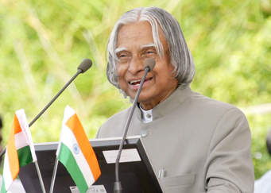

Avul Pakir Jainulabdeen Abdul Kalam
Avul Pakir Jainulabdeen Abdul Kalam usually referred as A. P. J. Abdul Kalam was the 11th President of India for the term 2002 to 2007. Popularly known as the People's President he was the chief brain behind India's attainment of the nuclear status in the global arena and was known as the ‘Missile Man of India’ for his work on development of ballistic missiles and space rocket technology.
Last year it was noticed the presence of condolence messages about the demise of Dr A P J Abdul Kalam on banners held at tea shops and auto rickshaws. At first, it was surprising and wonderful that why shop owners are displaying his picture and messages. In a country where hardly common men and women are aware about who the current President is, what is it that made these people showcase love and affection on his death? It was definitely not a political cause as Kalam was not a political leader. It was because this man touched every heart in a big and meaningful way. It was on his third visit to Rajiv Gandhi Indian Institute of Management (IIM) Shillong on July 27th, 2015 when the former President and world renowned scientist collapsed while giving lecture to the students.
Abdul Kalam,An ineffaceable mark is created in the minds of millions of Indians by our “People’s President” the late Dr APJ Abdul Kalam. Very few eminent public figures that history has witnessed had created such a deep influence even after their demise. This magical name sends an electrical signal to every soul in our country who wants to be truly successful. He always preferred to converse with people directly instead of using the web or the electronic media. He was very less aware of protocols and security measures. He loved spending quality time amongst students in various schools, colleges and universities to interact with them and to inspire them to be better individuals when they grow up.
There are numerous experiences of people who worked by the side of this man who has been deeply motivated by his honest care, affection and thoughtfulness. It was once, under a very tight project launch a scientist working under him requested an early leave as he was supposed to take his son to an exhibition. Engrossed in his work, it was three hours late when the scientist realised that he forgot keeping his parental duties. Going back home with a guilty heart he was amazed to know that his son was not at home. Instead he was at his exhibition. It was Dr Kalam, who on noticing that the scientist was not leaving his work, thought to keep his father’s promise to the child by taking him to the exhibition personally. It clearly shows how much he valued his men. Because it is men who makes or breaks an organisation.
"Small instances like refusing to sit on a chair offered to him on a seminar at IIT Varanasi just because its size was bigger than the rest shows how much he believed in being equal. Personally sending a handwritten thank you card to a kid who sketched his portrait inspired by his book “Wings of Fire” shows how polite he was to respond and acknowledge every good and positive deed."Abdul Kalam
Early Childhood and educationIt was unknown to parents Jainulabdeen and Ashiamma that one day their son will become the first citizen of India. Dr A.P.J Kalam served the country as its 11th President since year 2002 till 2007. The pure heart of the child got its nurture and care in the humble surroundings of the south Indian state of Tamil Nadu. Born in a poor family Kalam soon understood that he has to sponsor his own education by all means. From a very early age Kalam started earning his and his families living by distributing newspapers. However, money never lured him away from gaining knowledge. His ever growing thirst to gain knowledge compelled him to complete his studies successfully. In the Institute of Technology in Madras after studying aerospace engineering he graduated in the year 1960 after which he joined in the DRDO or the Aeronautical Development Establishment of the Defense Research and Development Organization as their scientist.
CareerThis multi dimensional person was a well known scientist exhibiting enormous and endless for science and technological research and development. It was he who made our country nuclear in its truest sense. It was in the year 1974, under the supervision of Dr Kalam, India underwent its first nuclear test. Next came the Pokhran –II in the year 1988. It was through these nuclear tests Dr Kalam showed the world India’s position and power in nuclear technology.
Awards and achievementsHis works awarded him three renowned awards from the Govt. of India namely- Padma Bhushan, Padma Vibhushan and the Bharat Ratna. In the year 1997, Kalam was also awarded with the Indira Gandhi Award for National Integration. He was awarded the Veer Savarkar Award in the year 1980 and the Ramanujan Award in the year 2000.From 40 universities all across the world, Kalam received honorary doctorates.
WorksKalam was the proud author of numerous inspirational books like “India 2010”, “Ignited Minds”, “Mission India”, “The Luminous Sparks”, “Wings of Fire” and “Inspiring Thoughts”.
Kalam's life, work and beliefs are filled with examples and inspirations. He will continue to inspire us forever. And this is the real reason why people from all the sections of the society spontaneously shown love for this great human being on his sad demise at IIM Shillong on 27th July 2015.
May This Noble & Pious Soul rest in Peace!!
| Year of Award or Honor | Name of Award or Honor |
|---|---|
| 1981 | Padma Bhushan |
| 1990 | Padma Vibhushan |
| 2009 | Hoover Medal |
| 2013 | NSS Von Braun Award |
| Wings of fire | India 2020 |